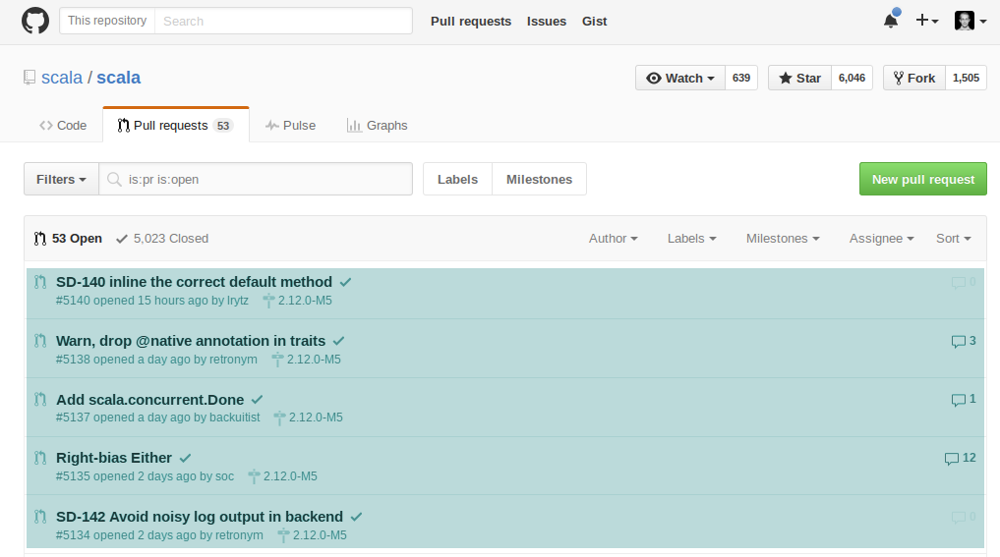
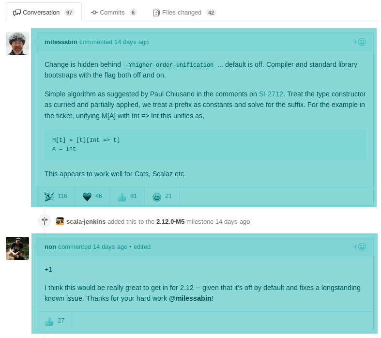

<!doctype html>
<html lang="en">

  <head>
    <meta charset="utf-8">

    <title>Free Monads and Free Applicatives</title>

    <meta name="description" content="TITLE">
    <meta name="author" content="AUTHOR">

    <meta name="apple-mobile-web-app-capable" content="yes" />
    <meta name="apple-mobile-web-app-status-bar-style" content="black-translucent" />

    <meta name="viewport" content="width=device-width, initial-scale=1.0, maximum-scale=1.0, user-scalable=no, minimal-ui">

    <link rel="stylesheet" href="css/reveal.css">
    <link rel="stylesheet" href="css/theme/black.css" id="theme">
    <link rel="stylesheet" href="css/deck.css">
    <link rel="stylesheet" href="//cdn.jsdelivr.net/font-hack/2.018/css/hack.min.css">

    <!-- Code syntax highlighting -->
    <link rel="stylesheet" href="lib/css/github.css">

    <!-- Printing and PDF exports -->
    <script>
      var link = document.createElement( 'link' );
      link.rel = 'stylesheet';
      link.type = 'text/css';
      link.href = window.location.search.match( /print-pdf/gi ) ? 'css/print/pdf.css' : 'css/print/paper.css';
      document.getElementsByTagName( 'head' )[0].appendChild( link );
    </script>

    <!--[if lt IE 9]>
    <script src="lib/js/html5shiv.js"></script>
    <![endif]-->
  </head>

  <body>

    <div class="reveal">

      <!-- Any section element inside of this container is displayed as a slide -->
      <div class="slides">

<!-- #################################################################################### -->
<!-- START                                                                                       -->
<!-- #################################################################################### -->

<section data-markdown data-background="images/codecentric-title-background-16x9.png"><script type="text/template">
## Free Monads and Free Applicatives

Markus Hauck, codecentric (@markus1189)
</script></section>

<!-- #################################################################################### -->

<section data-markdown><script type="text/template">
### What this talk is about

- Write Dsl using Free Monad / Free Applicative
- Explore the specific pros and cons
- Show how to exploit Free Applicatives
- Example: Query GitHub API
</script></section>

<!-- #################################################################################### -->

<section data-markdown><script type="text/template">
### Before We Start

- Requirements:
  - functional programming library of your choice
  - we will use cats, but could have used scalaz just as well
  - familiarity with GitHub (helpful?)
- Plan:
  - write a Dsl to query GitHub
  - using free monads
  - using free applicatives
  - using both
</script></section>

<!-- #################################################################################### -->

<section data-markdown><script type="text/template">
### GitHub API - Issues
Given an owner and a repo, list issues

</script></section>

<!-- #################################################################################### -->

<section data-markdown><script type="text/template">
### GitHub API - Comments
Given an issue, find all comments

Finally, retrieve the full name from a login
</script></section>

<!-- #################################################################################### -->

<section data-markdown><script type="text/template">
### GitHub API - Full Names
Finally, retrieve the full name (if given) from a login

</script></section>

<!-- #################################################################################### -->

<section data-markdown><script type="text/template">
### A first draft

<pre><code class="scala" data-trim data-noescape>
def listIssues(owner: Owner,
               repo: Repo
              ): Future[List[Issue]] =

def getComments(owner: Owner,
                repo: Repo,
                issue: Issue
               ): Future[List[Comment]] = ???

def getUser(login: UserLogin
           ): Future[User] = ???
</code></pre>
</script></section>

<!-- #################################################################################### -->

<section data-markdown><script type="text/template">
### The Start: Free Monads
- free monads offer simple way to construct your Dsl:
    1. write your *instructions* as an ADT
    2. use *Free* to lift them into the free monad
    3. write an interpreter
</script></section>

<!-- #################################################################################### -->

<section data-markdown><script type="text/template">
### 1. Write your *instructions* as an ADT

<pre><code class="scala" data-trim data-noescape>
sealed trait GitHub[A]

case class ListIssues(owner: Owner, repo: Repo)
  extends GitHub[List[Issue]]

case class GetComments(owner: Owner, repo: Repo, issue: Issue)
  extends GitHub[List[Comment]]

case class GetUser(login: UserLogin)
  extends GitHub[Option[User]]
</code></pre>
</script></section>

<!-- #################################################################################### -->

<section data-markdown><script type="text/template">
### 2. Use *Free* to lift instructions
<pre><code class="scala" data-trim data-noescape>
type GitHubMonadic[A] = Free[GitHub, A]

def listIssues(owner: Owner,
               repo: Repo
              ): GitHubMonadic[List[Issue]] =
  Free.liftF(ListIssues(owner,repo))

def getComments(owner: Owner,
                repo: Repo,
                issue: Issue
               ): GitHubMonadic[List[Comment]] =
  Free.liftF(GetComments(owner, repo, issue))

def getUser(login: UserLogin
           ): GitHubMonadic[User] =
  Free.liftF(GetUser(login))
</code></pre>
</script></section>

<!-- #################################################################################### -->

<section data-markdown><script type="text/template">
### 3. write an interpreter
We could hand-roll our own recursive traversal, but `Free` already
defines `foldMap`:

<pre><code class="scala" data-trim data-noescape>
sealed abstract class Free[S[_], A] {
  final def foldMap[M[_]:Monad](f: S ~> M): M[A] = ???
}
</code></pre>

- define a natural transformation, from `GitHub` to target type
constructor
<pre><code class="scala" data-trim data-noescape>
type Target[A]
val interpret: GitHub ~> Target = ???
</code></pre>
</script></section>

<!-- #################################################################################### -->

<section data-markdown><script type="text/template">
### 3. write an interpreter

<pre><code class="scala" data-trim data-noescape>

def step(client:Client) : GitHub ~> Future =
  new (GitHub ~> Future) {

    def apply[A](fa: GitHub[A]): Future[A] = fa match {

      case ffa @ GetComments(_, _, _) =>
        client.fetch(Endpoint(ffa)).map(parseComment)

      case ffa @ GetUser(_) =>
        client.fetch(Endpoint(ffa)).map(parseUser)

      case ffa @ ListIssues(_,_) =>
        client.fetch(Endpoint(ffa)).map(parseIssue)
    }
  }
</code></pre>

</script></section>

<!-- #################################################################################### -->

<section data-markdown><script type="text/template">
### (4.) Write programs!

<pre><code class="scala" data-trim data-noescape>
// 1) retrieve issues
// 2) retrieve comments from each issue
// 3) retrieve full name from each comments login name
def allUsers(owner: Owner, repo: Repo):
  GitHubMonadic[List[(Issue,List[(Comment,User)])]] = for {

  issues <- listIssues(owner,repo)

  issueComments <- issues.traverseU(issue =>
    getComments(owner,repo,issue).map((issue,_)))

  users <- issueComments.traverseU { case (issue,comments) =>
    comments.traverseU(comment =>
      getUser(comment.user).map((comment,_))).map((issue,_))
  }
} yield users
</code></pre>
</script></section>

<!-- #################################################################################### -->

<section data-markdown><script type="text/template">
### Done?

- predefined functions based on monads:
  - ifM, whileM, groupM, ...
- DSL looks good, but what about:
  - parallelism?
  - efficiency? (API is rate limited!)
- let's (try to) see how our program executes
</script></section>

<!-- #################################################################################### -->

<section>
<script type="text/javascript" src="https://asciinema.org/a/4camy2wo713213hnyeyt1can6.js" id="asciicast-4camy2wo713213hnyeyt1can6" async></script>
</section>

<!-- #################################################################################### -->

<section data-markdown><script type="text/template">
### Sequential execution all the way

</script></section>

<!-- #################################################################################### -->

<section data-markdown><script type="text/template">
### Recap of Free Monads

- quite popular and many tutorials
- very expressive
- forced *sequential* execution :(
- *not* statically analyzable :(
  - `Free` is opaque,  have to execute & feed result
  - supplying dummy values might change whole program
</script></section>

<!-- #################################################################################### -->

<section data-markdown><script type="text/template">
### Free Applicatives

- problem: monads are too powerful
- applicatives < monads
- let's try Free Applicatives then!
  1. write your *instructions* as an ADT (✓)
  2. use *FreeApplicative* to lift them into the free applicative functor
  3. write an interpreter (✓)
</script></section>

<!-- #################################################################################### -->

<section data-markdown><script type="text/template">
### Free Applicatives - Smart Constructors

<pre><code class="scala" data-trim data-noescape>
type GitHubApplicative[A] = FreeApplicative[GitHub, A]

def listIssues(owner: Owner,
               repo: Repo
              ): GitHubApplicative[List[Issue]] =
  FreeApplicative.lift(ListIssues(owner,repo))

def getComments(owner: Owner,
                repo: Repo,
                issue: Issue
               ): GitHubApplicative[List[Comment]] =
  FreeApplicative.lift(GetComments(owner, repo, issue))

def getUser(login: UserLogin
           ): GitHubApplicative[User] =
  FreeApplicative.lift(GetUser(login))
</code></pre>

</script></section>

<!-- #################################################################################### -->

<section data-markdown><script type="text/template">
### Free Applicatives - Write Programs

<pre><code class="scala" data-trim data-noescape>
// get issues from codecentric/foo and codecentric/bar
val issuesFooBar: GitHubApplicative[List[Issue]] =
    (listIssues(Owner("codecentric"),Repo("foo"))
      |@|
      listIssues(Owner("codecentric"),Repo("bar"))
    ).map(_++_)

// get full names from a list of logins
val logins: GitHubApplicative[List[User]] =
  List(UserLogin("markus1189"), UserLogin("..."), ???).
    traverseU(login => getUser(login))
</code></pre>

- use applicative builder, traverse, ...,  to combine results
</script></section>

<!-- #################################################################################### -->

<section data-markdown><script type="text/template">
### Free Applicatives - Execution

- programs written using `GitHubApplicative` can be executed in
parallel
- for `Future`, the `Applicative` instance does this already
- traversing a list of 1000 logins happens in parallel (limited only by concrete
  implementation of the http client)
</script></section>

<!-- #################################################################################### -->

<section>
<script type="text/javascript" data-src="https://asciinema.org/a/4nyktg15v6sxm7u2r5h5hziuz.js" id="asciicast-4nyktg15v6sxm7u2r5h5hziuz" async></script>
</section>

<!-- #################################################################################### -->

<section data-markdown><script type="text/template">
### Free Applicatives - Static Analysis

- parallel execution is a nice feature
- free applicatives allow static analysis of programs (*no* execution)
- when fetching full names of users, we want to avoid duplicate
  requests (rate limiting, remember?)
- idea: eliminate duplicate requests *before* execution
</script></section>

<!-- #################################################################################### -->

<section data-markdown><script type="text/template">
### Free Applicatives - Eliminate Duplicates

- method on `FreeApplicative` called `analyze`:
<pre><code class="scala" data-trim data-noescape>
sealed abstract class FreeApplicative[F[_], A] {
    def analyze[M:Monoid](
      f: F ~> λ[α => M]): M = ???
}
</code></pre>

- translate one of our instructions into type that forms a monoid
</script></section>

<!-- #################################################################################### -->

<section data-markdown><script type="text/template">
### Free Applicatives - Eliminate Duplicates

<pre><code class="scala" data-trim data-noescape>
  val logins: GitHub ~> λ[α=>Set[UserLogin]] = {
  new (GitHub ~> λ[α=>Set[UserLogin]]) {
    def apply[A](fa: GitHub[A]): Set[UserLogin] = fa match {
      case GetUser(u) => Set(u)
      case _ => Set.empty
    }
  }
}

def extractLogins(p: GitHubApplicative[_]): Set[UserLogin] =
  p.analyze(requestedLogins)
</code></pre>

- we collect logins into a `Set[UserLogin]`

</script></section>

<!-- #################################################################################### -->

<section data-markdown><script type="text/template">
### Free Applicatives - Improved Interpreter

<pre><code class="scala" data-trim data-noescape>
def analyzing[A,F[_]:Applicative](
  p: GitHubApplicative[A],
  interp: GitHub ~> F
): F[GitHub ~> F] = {
  val userLogins = extractLogins(p).toList

  val fetched: F[List[User]] =
    userLogins.traverseU(getUser).foldMap(interp)

  val mapping: F[Map[UserLogin,User]] =
    Functor[F].map(fetched)(userLogins.zip(_).toMap)

  Functor[F].map(mapping)(optimizedNat(_,interp))
}
</code></pre>
</script></section>

<!-- #################################################################################### -->

<section data-markdown><script type="text/template">
### Free Applicatives - Improved Interpreter

<pre><code class="scala" data-trim data-noescape>
def optimizedNat[F[_]:Applicative](
  mapping: Map[UserLogin,User],
  interp: GitHub ~> F
): GitHub ~> F = new (GitHub ~> F) {
  def apply[A](fa: GitHub[A]): F[A] = fa match {
    case ffa@GetUser(login) =>
      mapping.get(login) match {
        case Some(user) => Applicative[F].pure(user)
        case None => interp(ffa)
      }
    case _ => interp(fa)
  }
}
</code></pre>
</script></section>

<!-- #################################################################################### -->

<section data-markdown><script type="text/template">
### Free Applicatives - Improved Interpreter

- finally we can define a better interpreter:

<pre><code class="scala" data-trim data-noescape>
def interpret: GitHub ~> Future

def interpretOpt[A](p: GitHubApplicative[A]): Future[A] = {

  val stepper: Future[GitHub ~> Future] =
    analyzing(p,interpret)

  stepper.flatMap(p.foldMap(_))
}
</code></pre>
</script></section>

<!-- #################################################################################### -->

<section data-markdown><script type="text/template">
### Free Applicatives - Improved Interpreter

- only one possible optimization
- group issue requests for each repo, do only one call
- instead of executing everything in parallel, divide into batches
- that's why Free Applicatives are cool
</script></section>

<!-- #################################################################################### -->

<section data-markdown><script type="text/template">
### Free Applicatives - The Catch

- but there is a catch:
<pre><code class="scala" data-trim data-noescape>
type GA[A] = GitHubApplicative[A]
listIssues:  (Owner,Repo)       => GA[List[Issue]]
getComments: (Owner,Repo,Issue) => GA[List[Comment]]
</code></pre>
- Applicative only allows lifting of *pure* functions
- we need the monadic bind for our program!
</script></section>

<!-- #################################################################################### -->

<section data-markdown><script type="text/template">
### Free Monads - Composition

- Free Monads work over functors, which compose nicely
- instructions: either **GitHub** or **GitHubApplicative**
- `Coproduct` is higher kinded `Either`, fits our purpose

<pre><code class="scala" data-trim data-noescape>
type GitHubBoth[A] =
  Free[Coproduct[GitHub,GitHubApplicative,?],A]

// optional liftings for listIssues, getComments, ... => boring

def embed[A](p: GitHubApplicative[A]): GitHubBoth[A] =
  Free.liftF[Coproduct[GitHub,GitHubApplicative,?],A](
    Coproduct.right(p))
</code></pre>
</script></section>

<!-- #################################################################################### -->

<section data-markdown><script type="text/template">
### Free Monads - Interpretation

- have all pieces already, just some glue needed

<pre><code class="scala" data-trim data-noescape>
type GitHubBoth[A] =
  Free[Coproduct[GitHub,GitHubApplicative,?],A]

val interp: Coproduct[GitHub,GitHubApplicative,?] ~> Future
</code></pre>

we have

<pre><code class="scala" data-trim data-noescape>
GitHub ~> Future              // this is just `interpret`
GitHubApplicative ~> Future   // e.g. `interpretOpt`
</code></pre>
</script></section>

<!-- #################################################################################### -->

<section data-markdown><script type="text/template">
### Free Monads - Interpretation

- **NaturalTransformation** defines a helpful method

<pre><code class="scala" data-trim data-noescape>
trait NaturalTransformation[F[_],G[_]] {
  def or[H[_]](h: H ~> G): Coproduct[F, H, ?] ~> G = ???
}
</code></pre>

such that

<pre><code class="scala" data-trim data-noescape>
type GitHubCo[A] = Coproduct[GitHub,GitHubApplicative,?]

val interpretMix: GitHubCo ~> Future =
  interpret.or[GitHubApplicative](interpretOptNat)

def run(p: GitHubBoth[A]): Future[A] =
  p.foldMap(interpretMix)
</code></pre>
</script></section>

<!-- #################################################################################### -->

<section data-markdown><script type="text/template">
### Revisiting our Program
<pre><code class="scala" data-trim data-noescape>
def allUsersM(owner: Owner, repo: Repo):
  GitHubBoth[List[(Issue,List[(Comment,User)])]] = for {

  issues <- listIssuesM(owner,repo)                        // M

  issueComments <- embed {                                 // M
    issues.traverseU(issue =>                              // A
      getComments(owner,repo,issue).map((issue,_)))        // A
    }
  users <- embed {                                         // M
    issueComments.traverseU { case (i,comments) =>         // A
      comments.traverseU(comment =>                        // A
        getUser(comment.user).map((comment,_))).map((i,_)) // A
      }                                                    // M
    }
} yield users
</code></pre>
</script></section>

<!-- #################################################################################### -->

<section>
<script type="text/javascript" src="https://asciinema.org/a/3phdvkxcbsj5hrya4x0kputg9.js" id="asciicast-3phdvkxcbsj5hrya4x0kputg9" async></script>
</section>

<!-- #################################################################################### -->

<section data-markdown><script type="text/template">
### Revisiting our Program - Execution

- built from our initial instructions
- executes each "stage" in parallel
- avoids duplicate requests for user names
</script></section>

<!-- #################################################################################### -->

<section data-markdown><script type="text/template">
### Summary

- small DSL querying web API
- compare free monads and free applicatives
- parallel execution & static analysis
- regain monadic expressiveness using coproducts
- optimizing interpreter for the resulting program
</script></section>

<!-- #################################################################################### -->

<section data-markdown><script type="text/template">
## Thank you!

&nbsp;

[](http://creativecommons.org/licenses/by/4.0)<br>

<span class="license">This work is licensed under a [Creative Commons Attribution 4.0 International License](http://creativecommons.org/licenses/by/4.0) and powered by [reveal.js](https://github.com/hakimel/reveal.js) under its [LICENSE](https://github.com/hakimel/reveal.js/blob/master/LICENSE).</span>
</script></section>

<!-- #################################################################################### -->
<!-- END                                                                                  -->
<!-- #################################################################################### -->

      </div>

    </div>

    <script src="lib/js/head.min.js"></script>
    <script src="js/reveal.js"></script>

    <script>

      // Full list of configuration options available at:
      // https://github.com/hakimel/reveal.js#configuration
      Reveal.initialize({
        controls: true,
        progress: true,
        history: true,
        center: true,

        transition: 'slide', // none/fade/slide/convex/concave/zoom

        // Optional reveal.js plugins
        dependencies: [
          { src: 'lib/js/classList.js', condition: function() { return !document.body.classList; } },
          { src: 'plugin/markdown/marked.js', condition: function() { return !!document.querySelector( '[data-markdown]' ); } },
          { src: 'plugin/markdown/markdown.js', condition: function() { return !!document.querySelector( '[data-markdown]' ); } },
          { src: 'plugin/highlight/highlight.js', async: true, callback: function() { hljs.initHighlightingOnLoad(); } },
          { src: 'plugin/zoom-js/zoom.js', async: true },
          { src: 'plugin/notes/notes.js', async: true }
        ]
      });

    </script>

  </body>
</html>
